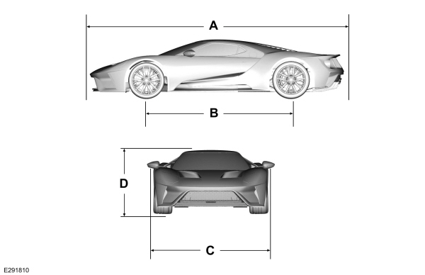

Transmisión: Automática de doble embrague Getrag de 7 velocidades con levas en el volante
Tracción: Trasera
Velocidad máxima: 347 km/h
0-100 km/h: 2,9 segundos
Aceleración 0-100 km/h: 2,9 segundos
Dimensiones y Peso
Longitud: 4.779 mm
Anchura: 2.003 mm
Altura: 1.109 mm (con suspensión variable de altura)
Peso en seco: 1.385 kg
Distribución de peso: 43% delantero y 57% trasero

Aerodinámica y Chasis
Material de construcción: Chasis monocasco y carrocería completa fabricados en fibra de carbono.
Suspensión: Sistema hidráulico activo de competición desarrollado por Multimatic que permite ajustar la altura del coche al suelo en modo "Track" (circuito).
Frenos: Sistema de frenos cerámicos de carbono en las cuatro ruedas.
Neumáticos: Michelin Pilot Sport Cup 2 (325/30) montados en llantas de 20 pulgadas.